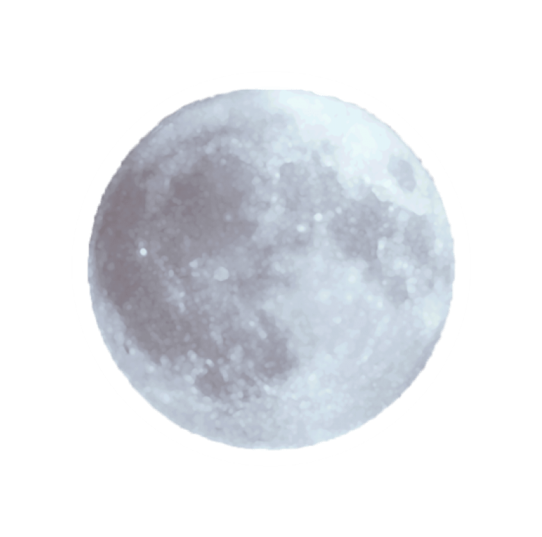

THE MOON

The Moon is the Earth's natural satellite. It has circled around the Earth for at least four billion years.
It is a rocky ball about a quarter of Earth's size and is held in its orbit by mutual gravitational attraction.
Most scientists believe that the Moon formed when, early in Earth's history, a planet smashed into it.
The impact was so tremendous that nothing was left of the planet but a few hot splashes thrown back up into space.
Within a day of the smash, these splashes had been drawn together by gravity to form the Moon.
The Moon is by far the brightest thing in the night sky. But it has no light of its own.
Moonlight is simply the Sun's light reflected off the white dust on the Moon's surface.
The Moon's gravity draws the oceans into an oval around the Earth, creating a bulge of water on each side of the world. These bulges stay beneath the Moon as the Earth spins round and so seem to run around the world, making the tide rise and fall as they pass.